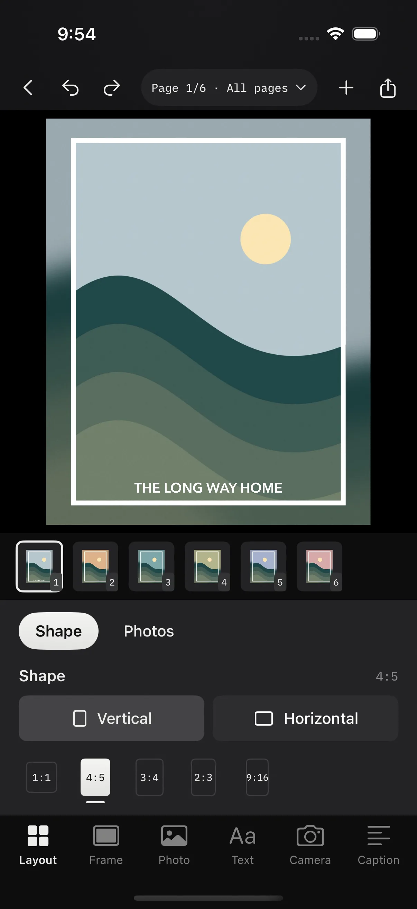
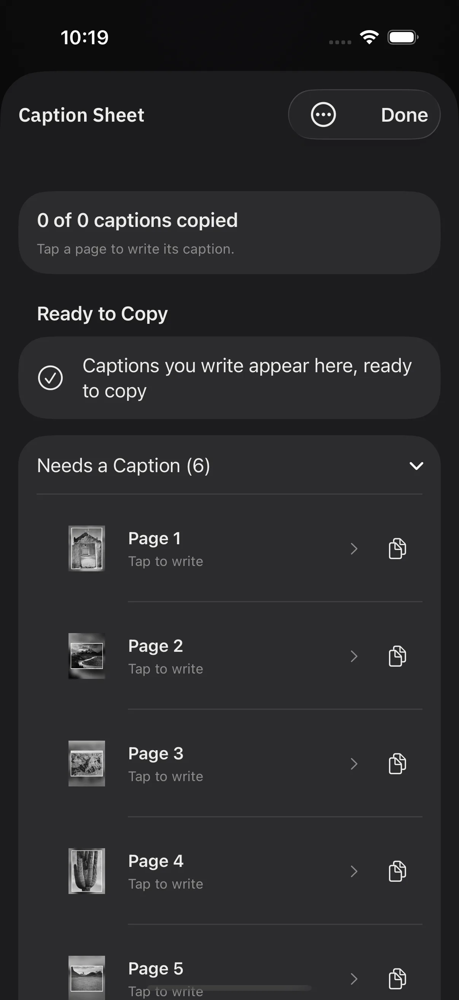
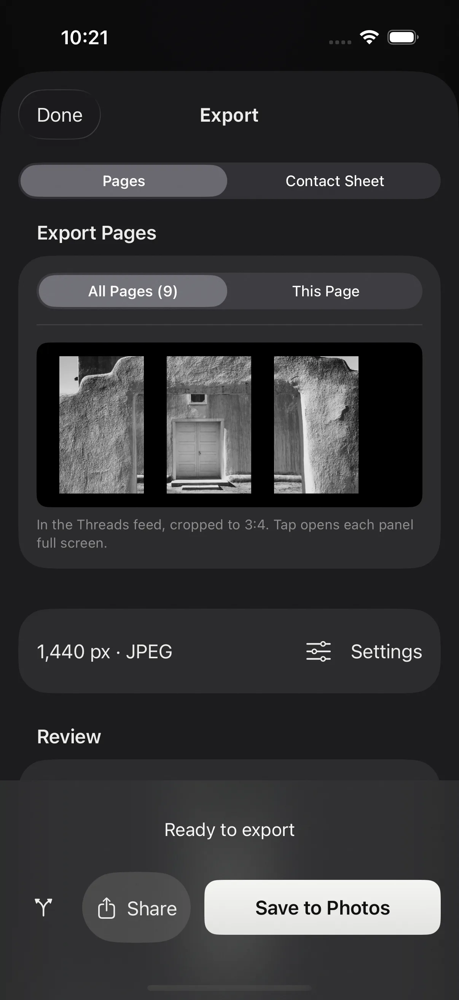
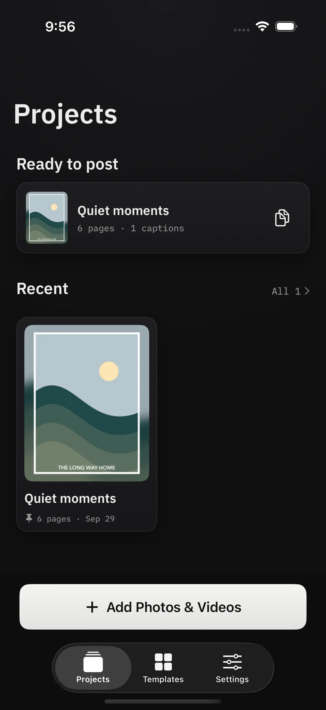
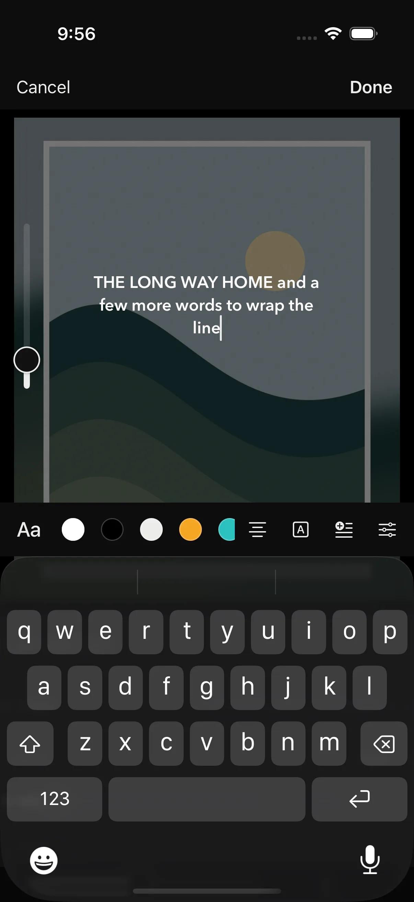
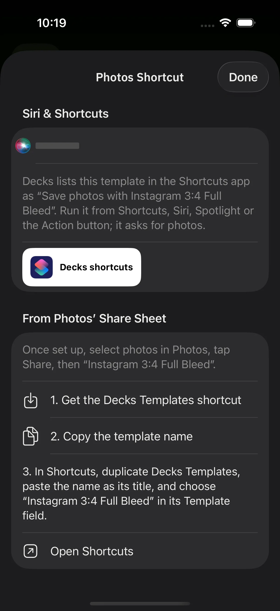

Sized for the feed.
Pick the shape a post needs and Decks handles the math. A border in the width you want, a background in a color or a blur of the photo itself, and film edges with sprockets when the shot deserves them.
- 1:1
- 4:5
- 3:4
- 2:3
- 9:16
Frames for Instagram and Threads · iPhone and iPad
Decks puts your photos in clean frames sized for Instagram and Threads, with the camera details, text, and captions a photographer wants beside them. Save the look as a template, and the next post takes a few taps. Or none: select photos in Apple Photos, run a Shortcut, and the finished pages land back in your library.
In development for iPhone and iPad. Not on TestFlight yet, so there is nothing to install.

Pick the shape a post needs and Decks handles the math. A border in the width you want, a background in a color or a blur of the photo itself, and film edges with sprockets when the shot deserves them.
Every choice on a page, from the border to the caption wording, can be saved as a template. Start the next batch from it, edit it on a sample photo, duplicate it for a variation, or share it as a file. There is no limit on how many you keep.
Each template shows up in the Shortcuts app as “Save photos with” that template’s name. Run it from Shortcuts, Siri, Spotlight, or the Action button, or add the Decks Templates shortcut to the Photos share sheet and post without opening the app.
Camera, lens, focal length, aperture, shutter, ISO, and date come from the photo’s own metadata. Put the details on the page as a card, drop them into the caption, or both.
Tap to type, drag to place, pinch to size, twist to rotate. Choose from the system fonts or any font installed on your device. Add a logo and let the border make room for it, the same way it does for a camera card.
Drop a clip into a page beside your photos. Trim it in place, keep the blurred background still or let it move with the footage, and export an MP4 with the same border, text, and camera card as the stills.
Captions
The Caption Sheet is one screen per page. Write the caption, then insert the camera details from a chip bar above the keyboard, without leaving the field. Type a semicolon to search every detail the photo carries.
When the batch is done, Decks keeps the captions in order. Copy the first, paste it in Instagram, come back for the second. Finished projects wait on the home screen under Ready to post with a Copy captions action beside them.

Instagram and Threads
Split one photo across linked pages and the pieces line up as a carousel. For Threads, a taller page shape matches how the app shows a full-screen image, and a feed preview in Export shows the 3:4 crop Threads applies in the timeline, so nothing important sits on a seam.
A Size Guide lists the pixel sizes each destination wants. Export defaults to 1440 pixels wide and saves straight to Photos, or hands the pages to the share sheet.

No ceilings



Example photographs by Ansel Adams from Ansel Adams Photographs of National Parks and Monuments, 1941 to 1942, National Archives and Records Administration. Public domain as work of the United States government. Text on the pages is placeholder wording, not Adams’ titles.
Still being built
Decks is a personal project for iPhone and iPad. It is not on TestFlight and there is no date to promise. It comes from the same workshop as Ingest, the Mac app for importing and culling.